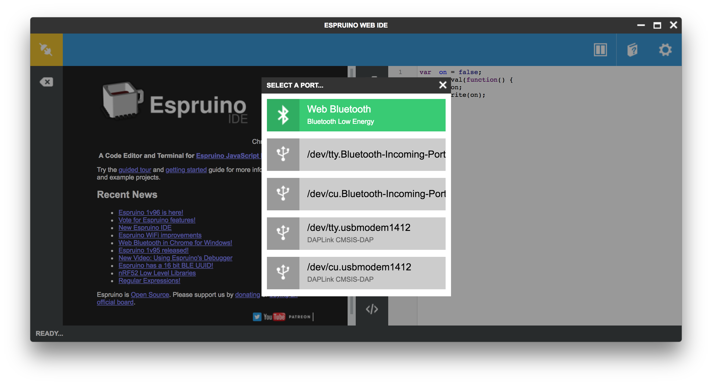
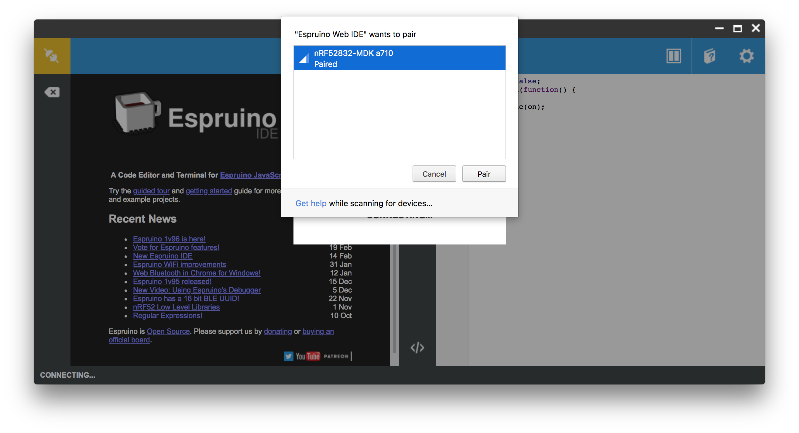
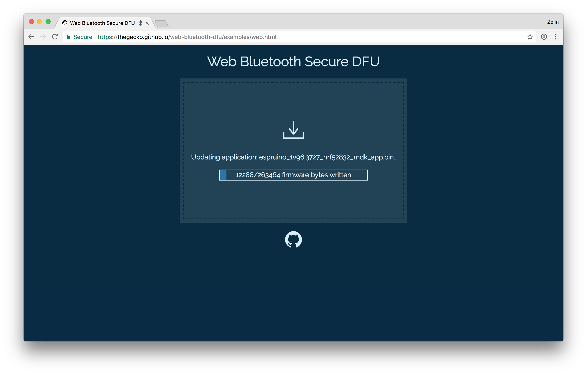

Espruino
运行在内存和存储都极其有限的 MCU 上的 JavaScrupt 引擎¶
简介¶
Espruino 是一个非常轻量的 JavaScript 引擎，可以运行在 128KB Flash & 8KB RAM 的微控制器 (MCU) 上。
相比于其他 JavaScript 引擎，Espruino 具有以下特点：
- 轻量级 —— 可以运行在 128KB Flash & 8KB RAM 的微控制器 (MCU) 上；
- 事件驱动 —— 与 node.js 类似，Espruino 采用事件驱动机制，支持异步函数回调和异步 I/O；
- 简单易用 —— Espruino 提供丰富的外设库，对硬件层做了很好的抽象，只要会写 JavaScript 就能用它来控制硬件；
- 跨平台开发 —— Espruino 提供一个基于 Chrome 浏览的 Web IDE，可以进行跨平台开发；
- 无线调试 —— Espruino Web IDE 使用 Web Bluetooth API，可以提供无线下载调试 JavaScript 代码功能。

了解更多内容，可以访问 Espruino 官网。
快速入门¶
下面内容将介绍如何在 nRF52832-MDK 上运行使用 Espruino。
下载 Espruino 固件¶
我们已经为 nRF52832-MDK 提供了 Espruino 固件，固件以 espruino_x.x_nrf52832_mdk.hex 方式命名，位于 ./nrf52832-mdk/firmware/espruino/ 目录。
连接 nRF52832-MDK，直接将该固件拖动到 DAPLINK 可移动磁盘即可完成下载：

安装 Espruino Web IDE¶
Espruino 官方提供了 IDE，开发起来非常方便，这里推荐使用 Chrome Web App，安装步骤如下：
- 安装 Chrome 浏览器；
- 安装 Espruino Web IDE 应用；
- 在浏览器标签栏打开 应用 图标可发现 Espruino Web IDE 应用
连接 nRF52832-MDK¶
现在，你可以开始在 Espruino Web IDE 上连接 nRF52832-MDK，点击 IDE 左上角连接图标，选择 Web Bluetooth 或串口进行连接：

对于 Web Bluetooth 连接，需要先配对：

成功连接，IDE 会有状态提示：

运行你的代码¶
连接成功后，设备即进入 REPL 模式，可以在左边窗口输入一些 JavaScript 代码：
> 1+1 > digitalWrite(LED1,1) > digitalWrite(LED1,0)
也可以在右边代码编辑器窗口输入 JavaScript 代码，点击上传即可自动加载脚本：
var on = false; setInterval(function() { on = !on; LED1.write(on); }, 500);

整个过程就是这样，接下来你可以查阅 Espruino 的相关 API，编写更有趣的应用。
无线更新 Espruino 固件¶
除了前面介绍的“拖放”下载 Espruino 固件，我们还可以通过无线 DFU 的方式进行固件更新，具体步骤如下：
-
打开 Chrome 浏览器，前往 Web Bluetooth Secure DFU 页面；
-
先将 nRF52832-MDK 上的
P18与3V3引脚短接，再上电，红蓝灯一起亮，断开P18与3V3，蓝色灯亮，此时设备即进入 DFU 模式； -
在浏览器页面选择相关固件包，固件位于 nrf52832-mdk/firmware/espruino/，以
espruino_x.x_nrf52832_mdk.zip方式命名； -
连接名为
DfuTarg的设备，等待更新完成即可，如果中途不慎中断，重复以上步骤即可。

如何编译 Espruino？¶
这部分内容将介绍如何自己动手编译 Espruino，以 macOS 系统为例，其他平台大同小异，可以自行摸索。
搭建编译环境¶
下载安装 GNU Arm Embedded toolchains，并确保添加到系统环境变量：
<path to install directory>/gcc-arm-none-eabi-6-2017-q1-update/bin
验证是否正确安装：
$ arm-none-eabi-gcc --version
注意
最新版 GNU Arm Embedded toolchains 可能无法正常工作，可以自行尝试。
支持 nRF52832-MDK¶
首先，克隆 Espruino 源码到本地：
$ git clone https://github.com/espruino/Espruino.git
为了支持 nRF52832-MDK 硬件，需要在 ./Espruino/boards/ 目录添加 NRF52832_MDK.py 文件，内容如下：
import pinutils; info = { 'name' : "nRF52832-MDK", 'link' : [ "https://wiki.makerdiary.co/nrf52832-mdk/" ], # This is the nRF52832-MDK 'default_console' : "EV_SERIAL1", 'default_console_tx' : "D20", 'default_console_rx' : "D19", 'default_console_baudrate' : "9600", 'variables' : 2250, # How many variables are allocated for Espruino to use. RAM will be overflowed if this number is too high and code won't compile. 'bootloader' : 1, 'binary_name' : 'espruino_%v_nrf52832_mdk.hex', 'build' : { 'optimizeflags' : '-Os', 'libraries' : [ 'BLUETOOTH', 'NET', 'GRAPHICS', 'CRYPTO', 'NFC', 'NEOPIXEL' ], 'makefile' : [ 'DEFINES+=-DHAL_NFC_ENGINEERING_BC_FTPAN_WORKAROUND=1', # Looks like proper production nRF52s had this issue 'DEFINES+=-DCONFIG_GPIO_AS_PINRESET', # Allow the reset pin to work 'DEFINES+=-DBLUETOOTH_NAME_PREFIX=\'"nRF52832-MDK"\'', 'DFU_PRIVATE_KEY=targets/nrf5x_dfu/dfu_private_key.pem', 'DFU_SETTINGS=--application-version 0xff --hw-version 52 --sd-req 0x8C' ] } }; chip = { 'part' : "NRF52832", 'family' : "NRF52", 'package' : "QFN48", 'ram' : 64, 'flash' : 512, 'speed' : 64, 'usart' : 1, 'spi' : 3, 'i2c' : 2, 'adc' : 1, 'dac' : 0, 'saved_code' : { 'address' : ((118 - 10) * 4096), # Bootloader takes pages 120-127, FS takes 118-119 'page_size' : 4096, 'pages' : 10, 'flash_available' : 512 - ((31 + 8 + 2 + 10)*4) # Softdevice uses 31 pages of flash, bootloader 8, FS 2, code 10. Each page is 4 kb. }, }; devices = { 'BTN1' : { 'pin' : 'D18', 'pinstate' : 'IN_PULLDOWN' }, # Pin negated in software 'LED1' : { 'pin' : 'D22', 'inverted' : False }, # Pin negated in software 'LED2' : { 'pin' : 'D23', 'inverted' : False }, # Pin negated in software 'LED3' : { 'pin' : 'D24', 'inverted' : False }, # Pin negated in software 'RX_PIN_NUMBER' : { 'pin' : 'D19'}, 'TX_PIN_NUMBER' : { 'pin' : 'D20'}, 'CTS_PIN_NUMBER' : { 'pin' : 'D7'}, 'RTS_PIN_NUMBER' : { 'pin' : 'D5'}, # Pin D22 is used for clock when driving neopixels - as not specifying a pin seems to break things }; # left-right, or top-bottom order board = { 'left' : [ 'VIN', '5V', 'GND', 'PD4','PD5','PD6','PD7','PD8','PD9','PD10','PD11','PD12','PD13','PD14','PD15','PD16','PD17','PD18'], 'right' : [ '3V3', 'GND', 'RST', 'CLK', 'DIO','TDO','TDI', 'TXD','RXD','PD3','PD2','PD31','PD30','PD29','PD28','PD27','PD26','PD25'], }; board["_css"] = """ """; def get_pins(): pins = pinutils.generate_pins(0,31) # 32 General Purpose I/O Pins. pinutils.findpin(pins, "PD0", True)["functions"]["XL1"]=0; pinutils.findpin(pins, "PD1", True)["functions"]["XL2"]=0; pinutils.findpin(pins, "PD5", True)["functions"]["3.3"]=0; pinutils.findpin(pins, "PD6", True)["functions"]["3.3"]=0; pinutils.findpin(pins, "PD7", True)["functions"]["3.3"]=0; pinutils.findpin(pins, "PD8", True)["functions"]["3.3"]=0; pinutils.findpin(pins, "PD9", True)["functions"]["NFC1"]=0; pinutils.findpin(pins, "PD10", True)["functions"]["NFC2"]=0; pinutils.findpin(pins, "PD13", True)["functions"]["3.3"]=0; pinutils.findpin(pins, "PD14", True)["functions"]["3.3"]=0; pinutils.findpin(pins, "PD15", True)["functions"]["3.3"]=0; pinutils.findpin(pins, "PD16", True)["functions"]["3.3"]=0; pinutils.findpin(pins, "PD17", True)["functions"]["3.3"]=0; pinutils.findpin(pins, "PD18", True)["functions"]["3.3"]=0; pinutils.findpin(pins, "PD19", True)["functions"]["RXD"]=0; pinutils.findpin(pins, "PD20", True)["functions"]["TXD"]=0; pinutils.findpin(pins, "PD22", True)["functions"]["LED_1"]=0; pinutils.findpin(pins, "PD23", True)["functions"]["LED_2"]=0; pinutils.findpin(pins, "PD24", True)["functions"]["LED_3"]=0; pinutils.findpin(pins, "PD2", True)["functions"]["ADC1_IN0"]=0; pinutils.findpin(pins, "PD3", True)["functions"]["ADC1_IN1"]=0; pinutils.findpin(pins, "PD4", True)["functions"]["ADC1_IN2"]=0; pinutils.findpin(pins, "PD5", True)["functions"]["ADC1_IN3"]=0; pinutils.findpin(pins, "PD28", True)["functions"]["ADC1_IN4"]=0; pinutils.findpin(pins, "PD29", True)["functions"]["ADC1_IN5"]=0; pinutils.findpin(pins, "PD30", True)["functions"]["ADC1_IN6"]=0; pinutils.findpin(pins, "PD31", True)["functions"]["ADC1_IN7"]=0; # everything is non-5v tolerant for pin in pins: pin["functions"]["3.3"]=0; #The boot/reset button will function as a reset button in normal operation. Pin reset on PD21 needs to be enabled on the nRF52832 device for this to work. return pins
你也可以直接克隆我们修改好的仓库：
$ git clone https://github.com/makerdiary/Espruino.git
编译 Espruino 固件¶
现在可以开始编译 Espruino，打开命令行终端，切换到 Espruino 目录：
$ cd <Espruino git clone location>/Espruino
直接运行以下命令，可以编译完整固件，将生成 .hex 文件：
$ make clean && BOARD=NRF52832_MDK RELEASE=1 make
运行以下命令，可以编译 DFU 固件，将生成 .zip 文件：
$ make clean && DFU_UPDATE_BUILD=1 BOARD=NRF52832_MDK RELEASE=1 make
参考资源¶
问题反馈¶
如果在开发过程遇到任何问题，可以通过 GitHub Issue 反馈。